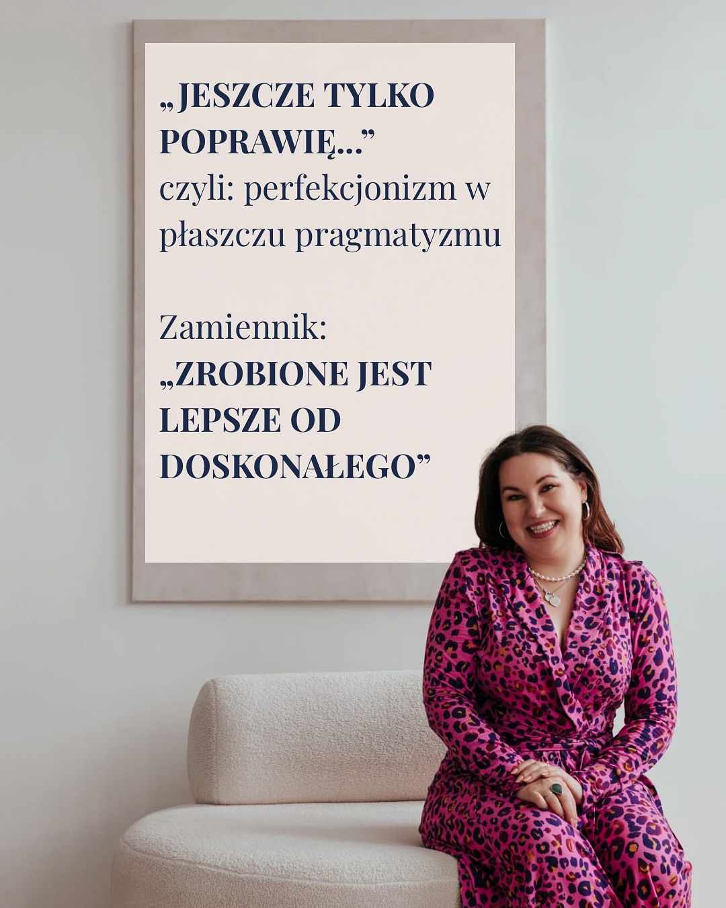

Najlepsza wersja siebie bez ulgi. Rozmowa z Aleksandrą Kisiel
O oszustwie wellness, presji instagramowej twarzy i pułapce wiecznego ulepszania ciała
Natalia Stępniak
Badanie Social Media Influence on Body Image and Cosmetic Surgery Considerations: A Systematic Review z 2024 roku1 pokazuje, że 70% młodych dorosłych kobiet i 60% mężczyzn deklaruje niezadowolenie ze swojego ciała. Dzisiaj, kiedy każdy z nas spędza z telefonem w ręku po kilka, a nawet kilkanaście godzin dziennie, niełatwo jest odciąć się od świata mediów społecznościowych. To właśnie era social mediów dała nieograniczoną przestrzeń dla porównywania się do innych i szerzenia zarówno tych bardziej, jak i mniej szkodliwych trendów.
„Nie będę marnować życia na nienawiść” – Aleksandra Kisiel w dynamicznym i autentycznym kadrze, w pełni wcielając w życie filozofię ciałoakceptacji, bez filtrów i bez ocen. (fot. Instagram @kisielle)
Kanony piękna towarzyszą ludzkości od wieków i nieustannie się zmieniają. W drugiej połowie XX wieku zjawisko zaczęło przybierać na sile wraz z rozwojem kultury masowej. Najpierw pojawiły się kolorowe magazyny i reklamy, w których prezentowano wąskie talie i suplementy diety, dzięki którym możemy uzyskać wymarzoną sylwetkę. Później w kioskach można było nabyć kasety wideo z różnego rodzaju ćwiczeniami do wykonywania we własnym domu, a w gazetach zaczęły pojawiać się porady dotyczące odchudzania i zdrowego żywienia. Mimo że już wtedy kanon idealnego ciała zaczął przesiąkać do mainstreamu i był propagowany wśród niemal każdej klasy społecznej, to jednak stosunkowo niedawno zjawisko zaczęło zyskiwać niespotykaną wcześniej popularność.
Wspólnym mianownikiem trendów dotyczących kwestii wyglądu zarówno sprzed dekad, jak i tych współczesnych, jest fakt, że nigdy nie dają poczucia ulgi. Kiedy bowiem zastosujemy się do zaleceń diety promowanej przez gwiazdę w kolorowym magazynie lub w mediach społecznościowych, to naturalną koleją rzeczy będzie dostrzeżenie przez nas kolejnych wad w swoim wyglądzie czy samopoczuciu. Będziemy więc w nieskończoność uciekać w kolejne działania, by zaspokoić potrzebę bycia lepszą wersją siebie. „Najlepsza wersja siebie” to określenie, którego często używają osoby promujące trendy odnoszące się do ulepszania naszego wyglądu. Uważam, że jest ono oszustwem sprzedawanym pod płaszczykiem dbania o siebie i swoje zdrowie, bo w rzeczywistości po „ulepszeniu” jednej części siebie szybko zauważamy kolejne, które również go wymagają. I tak w nieskończoność.
Podczas pandemii COVID-19 w 2020 roku TikTok zalany był filmami, na których wykonywano ćwiczenia Chloe Ting w celu uzyskania idealnie wyrzeźbionego brzucha w jak najkrótszym czasie. Później pojawiły się trendy takie jak looksmaxing, glow up czy winter arc. Wszystkie zachęcają do intensywnego i skompresowanego w krótkim okresie polepszenia swojego wyglądu do granic możliwości – czy to poprzez sport, czy poprzez kosmetyki i zabiegi medycyny estetycznej. Z jednej strony sama aktywność fizyczna nie jest przecież niczym złym – tak samo jak chęć polepszenia swojego wyglądu – natomiast warto jest się zastanowić nad genezą naszych potrzeb oraz nad tym, na ile są one wywołane przez nas samych, a na ile przez czynniki zewnętrzne.
W celu zgłębienia trendów tego typu postanowiłam poszukać odpowiedzi u ekspertki – Aleksandry Kisiel. Od lat działa ona w Internecie i otwarcie krytykuje trendy pojawiające się w przestrzeni medialnej i nie tylko. Na swoim profilu na Instagramie @kisielle, gdzie pokazuje realistyczne, niewyidealizowane podejście do ciała i życia, posiada prawie 40 tysięcy obserwujących. Na swoim profilu często odnosi się zarówno do współczesnych trendów dotyczących ciała, jak i do tych sprzed dekad.
Czy trendy pojawiające się dziś w przestrzeni medialnej są typowo współczesnym zjawiskiem, czy raczej tymi samymi wymaganiami zaadaptowanymi do dzisiejszych odbiorców?
Aleksandra Kisiel: Ciało i uroda to kwestie polityczne. Od zawsze, a przynajmniej od czasów zorganizowanych społeczności i państwowości, nasz wygląd komunikował status, poglądy etc. Co za tym idzie – kanon piękna miał na celu umocnić promowane postawy, podkreślić to, co w społeczeństwie jest promowane, a co – nie. I choć kanon piękna zmienia się (ostatnio – dość szybko), to zawsze chodzi w nim o to samo – o pokazanie, co jest najbardziej promowane i najbardziej niedostępne. Bo nawet gwiazdy, które wyznaczają obecne kanony, muszą wspierać się medycyną estetyczną, chirurgią plastyczną, restrykcyjnymi dietami, lekami, ćwiczeniami, a i tak nigdy nie będą w stanie powiedzieć: „Osiągnęłam cel, mogę odpocząć”. Kobiece ciało jest polem walki, przestrzenią do kreowania problemów i zarabiania na sprzedawaniu rozwiązań.
Aktualny kanon piękna, choć nieco się zmieniał na przestrzeni lat, w swoim rdzeniu jest niezmiennie kształtowany przez kapitalistyczne, purytańskie, patriarchalne, ale też europocentryczne (i rasistowskie) spojrzenie na piękno. Piękne jest szczupłe, młode, białe, pełnosprawne ciało, bo sygnalizuje zdolność do pomnażania kapitału, samokontrolę, pracowitość, skromność, czystość, niewinność, białość.
W jaki sposób budowane są te trendy? Jakie hasła są używane, by promować „ulepszanie siebie” i kto najczęściej je wygłasza?
Aleksandra Kisiel: Moda na szczupłe, gładkie, pełnosprawne ciało towarzyszy nam od dziesiątek lat. Ale w okolicy 2010 roku przeszła rebranding i zmieniła kategorię, przeskakując z „wyglądu” do „zdrowia”. Popularyzacja hasła wellness, przekonanie, że nasze zdrowie jest wyłącznie w naszych rękach (to błędne przekonanie, o czym mówi choćby WHO, podkreślając, jak ważne są „społeczno-ekonomiczne determinanty zdrowia”), a wygląd naszego ciała, jego rozmiar, są nie tylko dowodami naszej atrakcyjności i pracowitości, ale też zdrowia – sprawiły, że kanon piękna stał się jeszcze bardziej popularny. Bo jeśli szczupłość nie jest już wyłącznie kwestią estetyki, a zdrowia, to jaką masz „wymówkę”, by nie dążyć do szczupłości? Oczywiście, to myślenie, że szczupły równa się zdrowy jest dalekim od prawdy uproszczeniem. Ale bardzo dochodowym, bo utrzymuje się z niego niejedna firma z sektora wellness, beauty, medycyny estetycznej, farmacji. Więc gdy ktoś – influencer, przedsiębiorca, trener – krzyczy, że tylko w szczupłym ciele można być zdrowym, szczęśliwym i pięknym, zastanawiam się, co mógłby stracić, gdyby szczupłość i młodość zostały zdjęte z piedestału?
Czy trendy promujące ulepszanie swojego wyglądu nam szkodzą?
Aleksandra Kisiel: Oczywiście! Po pierwsze, to nie jest już kwestia „jednej operacji nosa raz w życiu”, tylko całego trybu życia: prewencyjny botoks, wypełniacze „od dwudziestego roku życia”, modelowanie ciała, korekty po ciąży, lifting i to często więcej niż raz w życiu. Badania pokazują, że ogromną część motywacji do zabiegów napędza lęk, wstyd i poczucie bycia „niewystarczającą”, a nie spokojna decyzja typu „zawsze chciałam i zrobię to dla siebie”. Systematyczne przeglądy pokazują, że osoby decydujące się na zabiegi mają częściej niską samoocenę, silną koncentrację na wyglądzie i wysoki lęk dotyczący ocen innych ludzi. Są też metaanalizy, które pokazują: owszem, część osób po operacjach zgłasza poprawę zadowolenia z wyglądu i samooceny, ale to często krótkoterminowe, a ogólny obraz jest bardzo zniuansowany – najmocniej „korzystają” ci, którzy mieli największe kompleksy, ale też największe ryzyko, że przeniosą tę obsesję na kolejne części ciała. Innymi słowy: to nie gasi pożaru, bardziej dolewa benzyny do przekonania „moje ciało jest projektem do poprawy”.
U młodych ten ogień jest jeszcze silniejszy. Mamy coraz więcej danych o tym, jak social media, selfie i filtry są sklejone z chęcią „zrobienia czegoś ze sobą”. Wspomniane badanie z 2024 roku1 pokazuje olbrzymią skalę niezadowolenia ze swojego ciała, a ekspozycja na treści związane z urodą znacząco zwiększa chęć skorzystania z zabiegów estetycznych. Nowsze badanie, Online selfie behavior and consideration of cosmetic surgery in teenage girls: The mediating roles of appearance comparisons and body dissatisfaction z 2025 roku2, pokazało, że im częściej młode osoby robią i oglądają selfie, tym większa jest gotowość rozważania operacji plastycznych; ważnym pośrednikiem jest porównywanie się i samouprzedmiotowienie („patrzę na siebie oczami innych”). Do tego wszystkiego dochodzi wątek, o którym w ogóle mało się mówi: jak ta moda zmienia nasze „domyślne ustawienia” w głowie. Jeśli w klasie kilka dziewczyn ma już „zrobione” usta, brwi, nosy, jeśli dwudziestolatki mówią o „prewencyjnym botoksie”, jeśli artykuły lifestyle’owe traktują liftingi i wypełniacze jak manicure, to naturalna twarz zaczyna wyglądać jak błąd systemu.

„Zrobione jest lepsze od doskonałego” – Aleksandra Kisiel o pułapce perfekcjonizmu i uwalnianiu się od presji ciągłego poprawiania samej siebie. (fot. Instagram @kisielle)Psychoanalityczki i badaczki kultury piszą wręcz o nowej, „instagramowej twarzy”: wygładzonej, zbalansowanej, bez charakterystycznych rysów, za to idealnie dopasowanej do filtra. W takiej rzeczywistości bardzo trudno rozwijać samoakceptację, bo punkt odniesienia jest permanentnie nierealny – i to już nie tylko wyfotoshopowana celebrytka, ale koleżanka z pracy. Czy to znaczy, że każdy zabieg jest zły, a osoba po operacji nosa jest „ofiarą systemu”? Nie. Z indywidualnej perspektywy ludzie często deklarują realną ulgę, poprawę funkcjonowania społecznego, obniżenie kompleksów. Ale jeśli spojrzymy szerzej, widać, że ten boom na „poprawianie” podkręca dokładnie te mechanizmy, które jako coachka ciałoakceptacji próbuję z kobietami rozbrajać: przekonanie, że ciało jest projektem, że trzeba nad nim „pracować”, że zmarszczka jest osobistą porażką, a brzuch po ciąży – spektakularnym zaniedbaniem.
Na swoim profilu nie kryjesz się z faktem, że jesteś matką. Jakie podejście wobec social mediów i nierealistycznych standardów dotyczących wyglądu panujących tam chciałabyś przekazać swojemu dziecku? Jak chronić osoby dorastające w dobie Internetu przed zagrożeniami idącymi za promowaniem nierealistycznych standardów piękna?
Aleksandra Kisiel: Nie wierzę w wychowanie w stylu „Internet jest zły, wyrzućmy telefony”. Bardziej zależy mi na tym, żeby moje dziecko umiało zadawać sobie trzy proste pytania: po pierwsze – „czy to, co oglądam, pokazuje prawdziwy świat, czy wybrany, przefiltrowany wycinek?”, po drugie – „jak się czuję po 15 minutach scrollowania?” i po trzecie – „czy to, co widzę, sprawia, że bardziej lubię siebie i ludzi, czy wręcz przeciwnie?”. Badania Dove nad wpływem social mediów na obraz ciała nastolatków3 coraz wyraźniej pokazują, że to nie sama aplikacja jest problemem, tylko sposób używania: porównywanie się, filtrowanie każdej fotki, śledzenie wyłącznie „idealnych” ciał, brak przerw i brak krytycznego myślenia. Z perspektywy rodzica widzę kilka rzeczy, które naprawdę mogą chronić młodych. Po pierwsze, język w domu: jeśli cały czas komentujemy własne ciało („ale wyglądam okropnie”, „muszę schudnąć, bo się nie da na mnie patrzeć”), to żaden filtr edukacyjny nie przykryje tego, co dziecko słyszy na co dzień. Po drugie, normalizowanie różnorodności – pokazywanie, że ludzie w realnym świecie mają różne nosy, brzuchy, skóry i że to jest norma, a nie „błąd do poprawki”. Po trzecie, uczenie, że można kształtować swój feed: że tak samo, jak sprzątamy pokój, możemy posprzątać sobie na Instagramie, wyciszyć konta, po których czujemy się gorzej, dodać te, które pokazują świat bez filtra. Dla mnie ochroną nie jest odcięcie dziecka od Internetu, tylko danie mu na tyle dużo wsparcia, wiedzy i czułości, żeby w tym Internecie potrafiło powiedzieć: „To nie jest o mnie, nie muszę tak wyglądać, żeby zasługiwać na przyjaźń, miłość i szacunek”. I tego, szczerze, życzyłabym też sobie samej, gdy byłam nastolatką.
I na koniec chyba najważniejsze: jak możemy stać się świadomymi odbiorcami i nie ulec propagandzie „ulepszania siebie”? Na co zwracać uwagę?
Aleksandra Kisiel: Myślę, że rozwiązanie nie polega na tym, żeby nagle być „ponad to”, tylko żeby zacząć widzieć, co dokładnie do nas mówi świat. Propaganda „ulepszania siebie” działa najlepiej wtedy, kiedy leci w tle jak muzyczka w supermarkecie – nawet jej nie rejestrujesz, ale wychodzisz z koszykiem pełnym rzeczy, których nie potrzebujesz. Dlatego pierwsze pytanie, które warto sobie zadawać, brzmi nie „czy to jest mądre?”, tylko: „jak ja się po tym czuję?”. Jeśli po 10 minutach scrollowania mam ochotę wyrzucić całą szafę, zapisać się na trzy detoksy i przeprosić świat za swój brzuch, to nie jest to inspiracja, tylko reklama opakowana w „motywację”. Druga rzecz to język. Świadomy odbiorca łapie się na słowach-kluczach: „ogarnij się”, „napraw się”, „ulepsz swoją wersję”, „zrób coś w końcu ze sobą”. To jest dokładnie ta narracja, która mówi: taka, jaka jesteś, jesteś niewystarczająca, dopiero po X (zabiegu, diecie, kursie) będziesz mogła zacząć żyć. Wtedy warto zrobić krok w tył i zapytać: jaki problem ktoś właśnie dla mnie wymyślił i kto zarobi na tym, że zaczynam się siebie wstydzić? Rozstępy, brzuch po ciąży, pory skóry stają się „dramatem” dopiero wtedy, kiedy da się na tym postawić biznesplan. No i jest jeszcze bardzo praktyczny krok: odfiltrowanie feedu – dosłownie i metaforycznie. Wyciszanie kont, po których czujesz się jak gorsza wersja człowieka, obserwowanie takich, gdzie widzisz różne ciała, różne twarze, różne życia. Im bardziej różnorodny masz obraz świata, tym trudniej wmówić ci, że istnieje tylko jeden słuszny wygląd. A na koniec jest zdanie, które powtarzam i sobie, i klientkom: mogę chcieć się rozwijać, ale nie jestem do naprawy. Jak tylko czuję, że jakiś przekaz mówi: „najpierw się popraw, potem zasłużysz”, to mentalnie wciskam „unsubscribe”. Bo im mniej wstydu kupujemy, tym więcej energii zostaje nam na życie, a nie na wieczne „ulepszanie się” pod cudzy gust.
-
Social Media Influence on Body Image and Cosmetic Surgery Considerations: A Systematic Review, 2024. ↩︎ ↩︎
-
Online selfie behavior and consideration of cosmetic surgery in teenage girls: The mediating roles of appearance comparisons and body dissatisfaction, 2025. ↩︎
-
Ogólnokrajowe badania Dove (Dove Self-Esteem Project) nad wpływem mediów społecznościowych na samoocenę i postrzeganie własnego ciała przez nastolatków. ↩︎